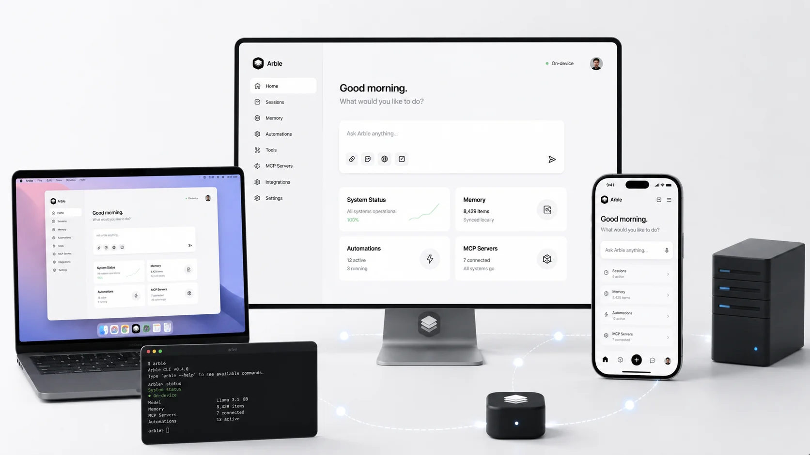

Today's software
- Fragmented apps & lost context
- Repetitive manual coordination
- Opaque background data routing
About Arble
Software is fragmented across dozens of disconnected tools. We built Arble as an operating system layer that bridges intent and execution—on hardware you already own.
Modern computing forces constant context switching between single-purpose applications. The problem is not model capability—it is the absence of a unified operating layer.
Arble runs the full agent loop on your local hardware. It maintains session memory, manages permission boundaries, and executes tools directly without third-party servers holding your data.
Knowledge workers navigate dozens of isolated apps daily. Every boundary drop resets context and manual overhead.
"AI should amplify what people can do, not subtract what people decide."
Software should dissolve into the background. You define intent; the runtime handles tool execution, state tracking, and formatting—leaving final decision-making entirely with you.
Automated actions operate strictly within explicit boundaries you set.
Keys, context, and the agent loop execute on hardware you own.
Zero telemetry data sales. Enclave protection for all local credentials.
Every tool invocation, source link, and write action is fully auditable.
Extensible via Tool SDK, MCP servers, CLI, and self-hosting infrastructure.
Architected for steady maintenance and reliable long-term developer APIs.
Arble connects intent to action across desktop, mobile, CLI, and custom servers.

macOS, Windows & Linux native runtime.
On-device agent execution on iOS & Android.
Cross-session context that stays local.
Granular control over write and execute tools.
Native Model Context Protocol server support.
Custom toolsets and command-line execution.
Sriram M
AI Engineering
Developer with a systems infrastructure background. Focused on building reliable local-first platforms and reducing human–machine friction through intent-first interfaces. Architected Arble's core platform, including the MCP framework, local agent execution loop, permission engine, and tool runtime.
Sudharsan S
AI Engineering
AI engineer focused on building intelligent, production-ready experiences that connect users with powerful automation. Designed and built Arble's AI systems, integrations and connector ecosystem, along with the desktop experience and web platform — turning complex automation into everyday workflows.
Because context does not travel. Work is scattered across apps that cannot see each other, and the assistant that could join them up does not run where the data lives.
It manages runtime resources, tool execution, session memory, and security permissions across applications—functioning as a true OS layer.
Unlike web chat boxes, Arble executes real local tools, persists memory across sessions, and keeps API credentials in hardware enclaves.
Local execution ensures zero network dependency for core logic, instant response times, and complete ownership of your contextual data.
Yes. You can build typed tools via our Tool SDK, connect custom MCP servers, or automate execution using the CLI and API.
Claude, OpenAI, DeepSeek, Kimi, Perplexity and NVIDIA NIM, alongside Ollama for models running on your own hardware. You choose the provider in Settings, and fallback chains mean one provider going down does not take the assistant with it.
Yes. Arble is bring-your-own-key throughout. Secrets resolve from your OS keychain or a secret manager and are referenced by name, so they are never written into a config file you might commit.
The agent loop, your memory, your files and the permission gate all run on your device. Model inference runs wherever the model does: choose Ollama and nothing leaves your machine; choose a hosted provider and only that turn’s prompt goes to it. You decide which, per session.
Linux 5.15+ and macOS 14+ for the desktop runtime, with Ubuntu 22.04 and 24.04, Debian 12 and RHEL 9 tested directly. Windows runs through WSL2 for development rather than production. The mobile app ships for iOS and Android.
The future of software
Bring your own models. Keep your own data. Setup takes four minutes — once it lands.